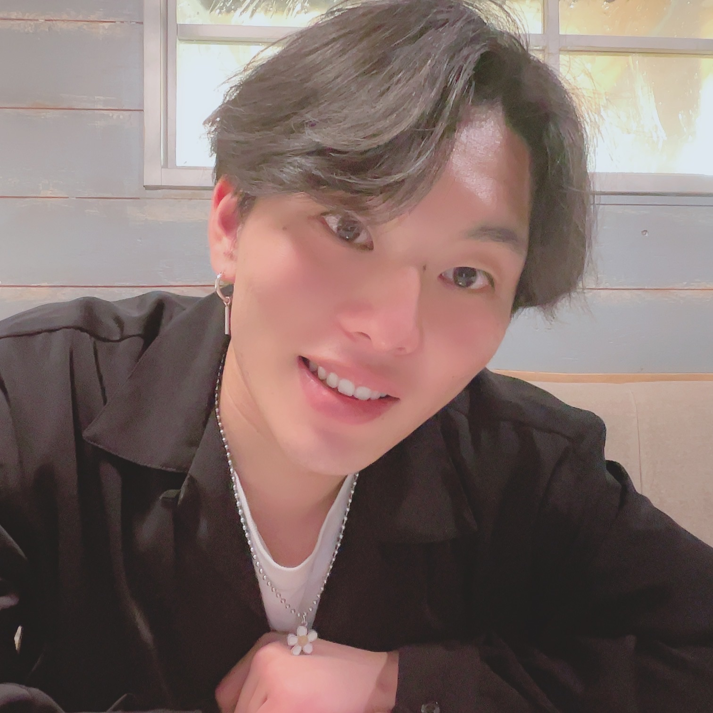

Toyota Motor Corporation
2015 —ML R&D Engineer / MLOps Engineer & PM — AI CoE
R&D on VLA models for a real manufacturing line. Engineer and PM for the MLOps platform they train on, multi-node GPU cluster included.

Physical AI · Nagoya, Japan
ML Engineer — Robot Foundation Models
I build Vision-Language-Action models for real robots at Toyota, and the GPU platform that trains them. Executive Officer at AI Nest, and manager for AI product development at the University of Tokyo.
01 Now
ML R&D Engineer / MLOps Engineer & PM — AI CoE
R&D on VLA models for a real manufacturing line. Engineer and PM for the MLOps platform they train on, multi-node GPU cluster included.
Executive Officer, Principal Research Engineer
Project manager and full-stack engineer on client engagements, end to end. Presales, and product manager for our own products.
AI Software Developer → Manager
An agent system that auto-grades PDF assignments for the GCI endowed course, plus work on the operational side of running the course itself.
02 What I work on
VLA manipulation policies — getting them onto a real production line, learning from human data, explainability, safety, reinforcement learning and world models.
The breakdown →RAG, enterprise search, and AI gateways — designed, evaluated, and actually shipped to users.
Foundation-model training at scale: NVIDIA GPU Slurm clusters on GCP, MLOps, accelerator evaluation.
03 Stack
04 Selected research
IJCAI 2025 · AI4TS Workshop / JSAI 2025
Beats CSDI on 7 of 8 benchmarks (~67% lower MSE on ETTm2). Extended version under review at Transactions on Artificial Intelligence.
RSS 2026 · Robotics Foundation Models Challenge
Reward-weighted SFT with a VLM-based reward model. Presented in Sydney.
05 Background